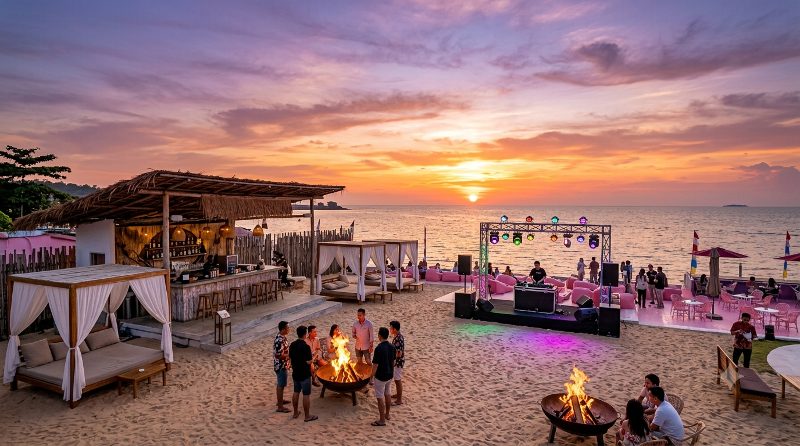
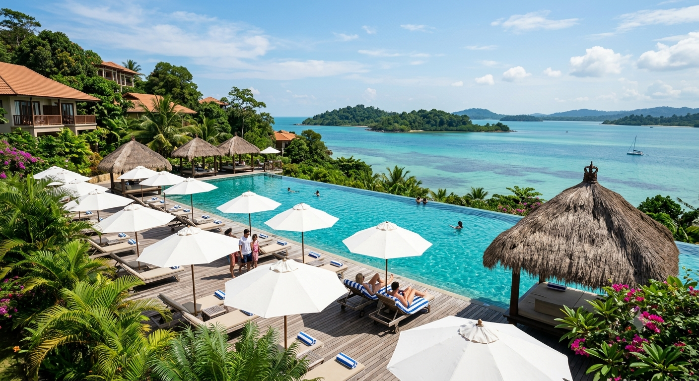

Turquoise lagoons, golden sand dunes, ancient mangroves pulsing with fireflies — Bintan is the Riau Islands' sanctuary, an hour by ferry from Singapore.
Bintan is the Riau Islands' crown jewel — an island of 1,170 square kilometers where turquoise lagoons swallow entire shorelines, white sand beaches stretch for kilometers undisturbed by roads or development, ancient mangrove forests pulse with bioluminescent fireflies at dusk, and luxury resorts so exclusive their front gates double as private yacht berths.
Bintan's geography is extraordinary. The island contains within its boundaries ecosystems that exist nowhere else in the Indonesian archipelago -- golden sand dunes (Gurun Pasir) rolling across a tropical jungle interior, blue limestone karst caves where freshwater springs bubble through rock, mangrove river networks so wide their opposite banks vanish into mist.
Meanwhile, Bintan's Lagoi Bay development along the northeastern coast has become Southeast Asia's most ambitious luxury resort project. The Lagoi Bay Green City master plan encompasses five-star resorts (Ananda Bintan, Bintan Resorts), championship Jack Nicklaus golf courses, private beach estates, a recreational marina, and overwater villas built on stilts directly above crystal-clear shallow waters where the lagoon meets the open sea.
The contrast with Batam is intentional by design. Where Batam is about adrenaline, nightlife, shopping sprees, and urban energy, Bintan is about slowing down: sunrise yoga on a private beach, lunch at a resort that sources seafood from their own marine farm, firefly river kayaking at dusk that looks like stepping into an animated film.

These are the moments that make Bintan a destination people travel internationally specifically to experience.
Beyond the iconic spots, Bintan rewards repeat exploration through nature, heritage, and wellness.
Batam's adrenaline rush. Six championship golf courses within the archipelago (Palm Spring to Nongsa). Property investment analysis that will inform your Wednesday sit-down with PropNex.